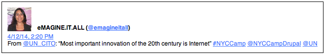
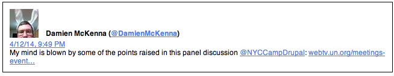

NYC Camp 2014
Conference Highlights
(Press Spacebar)
- 2500+ members
- 14 successful camps
- trainings, summits and hackathons
- UN CITO fact 1
- UN CITO fact 2
- UN CITO fact 3
Conference Highlights
- Conference Keynote and Panel
- Drupal Ambassadors from 17 Countries
- Multilingual Partnership
- Evening Keynote on Platforms for Collaboration
- Barn Raising: DOable prototype
Trainings and Summits
- UN Training Intensive
- Training Future Technologists
- Preparing the Next Generation
- NPO/NGO & Higher Ed Summits
- Security Summit (Not Recorded)
Drupal/UN Partnership
- Bringing Out the Best
- High quality presentations and speakers
- Engendering Greater Awareness
- Coding for a Cause
- Partnership for the Future
Code Development
- Core Summit & Sprinting
- Sprints: Security, Multilingual, Media
- Front-end: Twig Sprints
- COD team almost gets that Beta out
- Drupal Next Generation
Conference Keynote
The highlight of NYC Camp was undoubtedly the Saturday afternoon keynote address by UN CITO Atti Riazi. Speaking in the mini-general assembly room to as many Drupalists as attended Boston Drupalcon in 2008, Ms Riazi delivered a riveting and thought-provoking address as evinced by the highly focused Q&A session that followed.

Plenary Panel
Immediately after this on the program was the Women & Technology Leadership panel with Ms. Riazi, Holly Ross (executive director of the Drupal Association) and Angie 'webchick' Byron (co-maintainer of Drupal 7 and DA board member) which in addition to the on-site audience was watched by quite a high number of people around the world, to go by the real time feedback on social media.

Drupal ambassadors from 17 Countries Around the World
Out of all the leading source development projects Drupal stands out as being a global phenomenon bringing together code and community in the web's leading multilingual web framework. Drupal is also a diverse community itself with leads for various initiatives spread out across the globe. NYC Camp is one of the half-dozen or so annual events bringing them together to collaborate in real time. This year 17 countries were represented by over 1000 registered attendees. Hosting on campus brings to the UN unrivaled access to not just some of the most knowledgeable Drupalists in the world, but also some of the most innovative thinkers in the area of open source technology and planning.